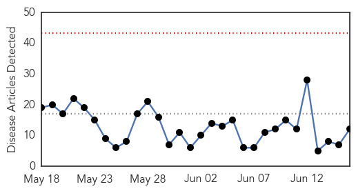
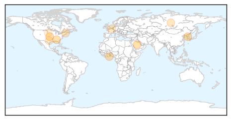

30 Day Trends
Web: 0 alerts, 0 warnings
Twitter: 5 alerts, 0 warnings
Top Articles:
- 1.000
- MERS Korea Outbreak Slowing?
- 0.991
- 'Doctor Shopping' Helped Spread MERS, World Health Organization Says
- 0.983
- Avian influenza H5N1 and H7N9: The simmering epidemics
- 0.949
- What Alabama dog owners should know about canine flu: Risk is low but take precautions
- 0.941
- Bird Flu confirmed in Volta region; farmer loses 330 birds in two days
- 0.941
- Bird Flu confirmed in Volta region; farmer loses 330 birds in two days
- 0.751
- Avian Flu Outbreak Reported in Russia
- 0.751
- June 16, 2015 Archives
- 0.751
- June 15, 2015 Archives
- 0.751
- June 15, 2015 Archives
- 0.633
- Gonzales Inquirer: News
- 0.515
- Indiana bans moving poultry, other birds to events
Top Tweets:
-
No tweets found for Jun 16, 2015
Web/News Articles
Tweets

Article Locations
Article Confidences